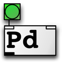
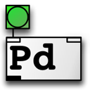
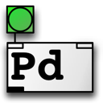

Decebal Popa
I am a programmer with a lot of experience in media (online, print), events management, travel and open source technologies, working randomly in these fields for the last 10 years. I am fluent in english, having basic knowledge of french and italian, my native language being romanian.
deckool@gmail.com deckool@hush.com
For the last 4 years and still counting i am a freelancer in web architecture and development, participating in various projects.
1998 - present Member of alpine club Carpatic, participating in organizing mountain adventures and trails.
2005 - 2007 Colaborate with few travel agencies on management of business growth.
2008-2009 Teambuilding manager with Topteambuilding
contract negociator and direct working with big romanian corporations. ,outdoor activities providers (cayac, rafting, ziplines, guides) along with hotels and transportation.
2009 Parfait Roumanie - small web agency take birth, first product being a national travel magazine.
work involved include informations gathering, data mining, logistics, translating, the main domains being fashion, cosmetics and leisure industries.
2009-present i am fully focusing on programming, Haskell being the main language, Html, Css, JS, along with databases like MongoDB, Redis and ElasticSearch not being foreign.
more than 15000 hours of active coding in different enviroments starting with basic Wordpress, Html, Css for theme development moving to the core with PHP continuing with some development with and for Indexhibit, Cargocollective community and Stacey. collecting XML and JSON data, moving towards data mining with earthquakes, weather and volcanoes jumping to different API's like Github, DarkSky integrating coding in visual arts with Processing and Pure Data helped by Arduino microcontroller. touching Haskell and it's community, staying with it and learning programming. introduction to MongoDB, Redis and ElasticSearch along with other small but very effective MessagePack.
2012 worked in fundraising department in CREDIDAM, the Romanian Center for Performing Artists
Edmond Nicolau Technical College - Bucharest, graduated with Electronist Technician degree.
Dimitrie Cantemir University - Bucharest, Touristic and Commercial Management.



Processing, Pure Data, Haskell, Github, Git, Arduino.